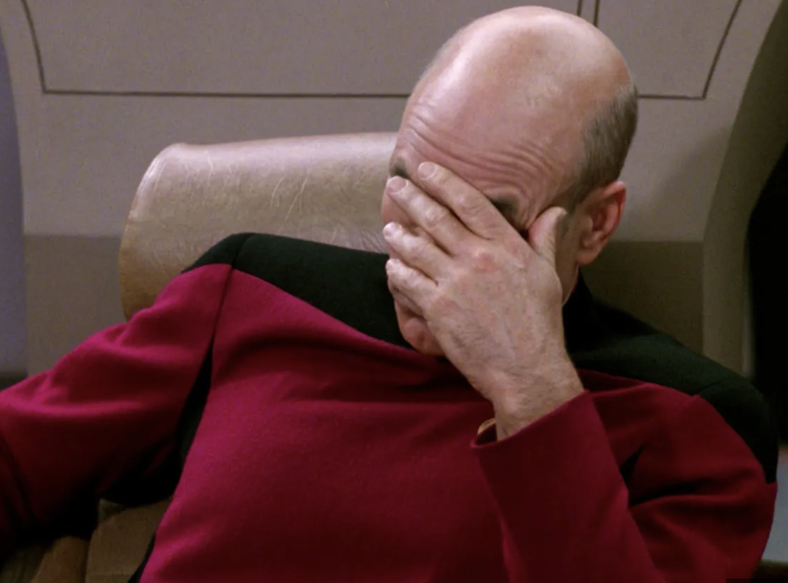
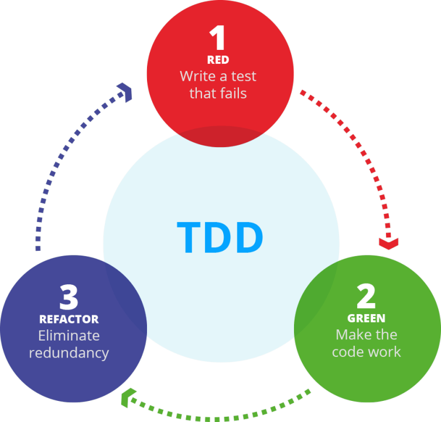
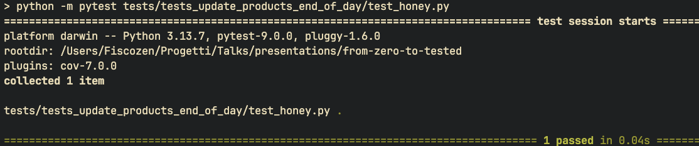
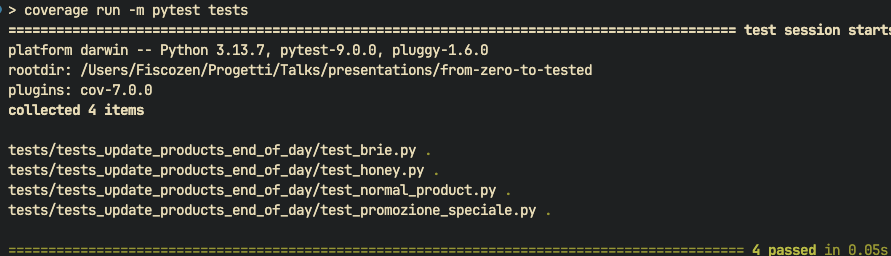
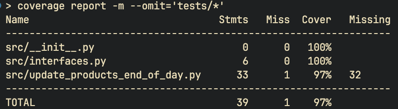
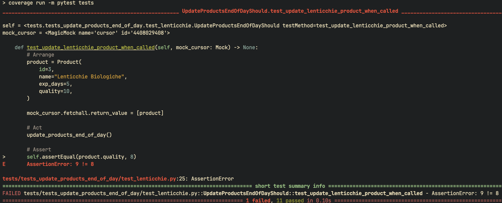

# From Zero to Tested Come aggiungere test a un progetto esistente https://buglil.github.io/Talks/from-zero-to-tested/#/ --- Come ci si trova immischiati <br/> un progetto privo di test? --- ## Lunedì mattina ore 9:00 - Il briefing --- "Buongiorno Lorenzo, <br/> il nostro cliente `Acme.Corp` è un supermercato con un gestionale custom. Vogliono una `nuova funzionalità` entro questo `venerdì`! L'azienda che lo ha sviluppato è `fallita` e dobbiamo assolutamente occuparcene noi!" <!-- .element class="align-left" --> --- "...occuparcene noi!..." --- <div class="flex"> <div class="w-50"><img class="circular-img" src="./imgs/profile.jpg" /></div> <div class="align-left mt-1 ml-1"> <b>Lorenzo Bugli</b> - Senior software engineer presso <span class="text-blue-highlight">Fiscozen</span> faccio parte della community di <span class="text-blue-highlight">Schroedinger Hat</span> </div> </div> <br /> <div class="flex"> <div class="align-left"> Schroedinger Hat è un'associazione no profit che promuove l'opensource attraverso progetti di sviluppo software ed eventi </div> <div class="w-75"> <img src="./imgs/sh-logo.png" /> </div> </div> --- ## Situazione rosea - Conoscenza del codice pari a zero <!-- .element class="fragment align-left" --> - Zero test, zero documentazione <!-- .element class="fragment" --> - Non so come funziona il programma <!-- .element class="fragment" --> --- ## Il mio primo pensiero? --- <img class="w-50" src="./imgs/i-hate-mondays.png" /> --- ## Il secondo pensiero --- Cos'e' che devo fare esattamente? --- ## 12 meetings later... --- ## Il contesto - Tutti i prodotti hanno una proprietà che indica quanti `giorni` mancano alla `data di scadenza`. - Tutti i prodotti hanno una proprietà che denota il `valore` dell'articolo --- ## Il contesto - Alla `fine di ogni giornata` il sistema `decrementa` entrambe le proprietà per ogni prodotto - Alcuni prodotti hanno `regole speciali`, come le `promozioni` che hanno regole personalizzate --- ## Maggiori dettagli "Metteremo in vendita una nuova categoria di prodotti, i `Lenticchie biologiche`. Questi prodotti perdono qualità più velocemente ogni giorno. Dobbiamo aggiornare il sistema per gestire delle `nuove regole personalizzate` <!-- .element class="align-left" --> --- "Le `Lenticchie biologiche` perdono `2 punti di qualità` ogni giorno trascorso." --- Alla fine la richiesta del cliente e' semplice, no? --- Ingenuo... --- Ho concluso la giornata portandomi il `codice in locale` con un `backup` del `database` per poter iniziare a guardare il codice e sopratutto `provare` il `software` . <!-- .element class="align-left" --> --- ## Martedi' ## 3gg alla scadenza --- Prendiamo un pezzo a caso del codice --- <img class="w-75" src="./imgs/the-what-face.png" /> --- ```python[] def process_supplier_invoices(): global connection, cursor, total_amount, email_server cursor.execute("SELECT * FROM supplier_invoices WHERE status != 'PROCESSED'") invoices = cursor.fetchall() total_amount = 0.0 urgent_count = 0; vip_discount = 0; report_text = "" for inv in invoices: if inv[8] == 1: # Fattura urgente cursor.execute("UPDATE supplier_invoices SET priority = 'HIGH' WHERE id = " + str(inv[0])) if inv[4] > 5000: # Importo alto cursor.execute("SELECT vip_status FROM suppliers WHERE id = " + str(inv[2])) supplier = cursor.fetchone() if supplier and supplier[0] == 1: # Fornitore VIP discounted = inv[5] * 0.98 vip_discount += inv[5] - discounted total_amount += discounted query = str(inv[0]) + ", " + str(vip_discount) + ", '" + str(datetime.now()) + "'" cursor.execute("INSERT INTO vip_discounts VALUES (" + query + ")") else: total_amount += inv[5] else: total_amount += inv[5] cursor.execute("UPDATE supplier_invoices SET status = 'PROCESSED' WHERE id = " + str(inv[0])) final_report = "FATTURE FORNITORI " + str(datetime.now().day) + "/" + str(datetime.now().month) + "\n" email_server.sendmail("finance@acme.com", final_report) f = open("/tmp/suppliers_" + str(datetime.now().date()) + ".txt", "w") f.write(final_report) f.close() connection.commit() if urgent_count > 5: return False, "TROPPI URGENTI", urgent_count else: return True, final_report, total_amount ``` <!-- .element class="fullscreen" --> ---  --- ## Caratteristiche principali del codice - Wall of code unico `non strutturato` <!-- .element class="fragment" --> - Impossibile da toccare `senza rompere` qualcosa <!-- .element class="fragment" --> --- Quella modifica che doveva essere fatta <br/> in `mezza giornata` non era possibile --- Come si affronta un mostro del genere? --- Si capisce la `funzionalita' alto livello` del sistema anche provando fisicamente l'applicazione <!-- .element class="align-left" --> Si ricerca nel codice `dove` e `come` le funzionalita' sono state implementate <!-- .element class="fragment align-left" --> --- Lo scopo e' comprendere le `dipendenze` tra i componenti e `trovare` i punti impattati da un eventuale cambiamento <!-- .element class="align-left" --> Non si scrive codice, si `studia` quello esistente <!-- .element class="fragment align-left" --> Si cerca di capire come ha `ragionato` il programmatore <!-- .element class="fragment align-left" --> --- ```mermaid graph TB subgraph ACME["ACME Supermarket System"] subgraph CORE["Business Logic"] UPD["update_products_end_of_day<br/><br/> Funzione critica legacy per la gestione delle scadenze e qualita' prodotti"] INV["process_supplier_invoices<br/><br/> Funzione gestione fatture per calcolo importi e gestione delle priorita'"] end subgraph REP["Reporting System"] DSR["daily_sales_report Sistema di reportistica giornaliera su db"] end subgraph DATA["Data Layer"] DB[("MySQL Database<br/>products, sales<br/>customers, stats")] end subgraph EXT["External Systems"] EMAIL["Email Server<br/>manager@acme.com"] end subgraph RULES["Business Rules Implicite"] BR["Regole di Business<br/>Quality: 0-50<br/>VIP discount: 10%<br/>Card discount: 5%<br/>Exp_days countdown"] end end UPD --> DB DSR --> DB INV --> DB DSR --> EMAIL UPD -.-> BR DSR -.-> BR style UPD fill:pink,stroke:#fff,stroke-width:2px,color:black style INV fill:orange,stroke:#fff,stroke-width:2px,color:black style DSR fill:pink,stroke:#fff,stroke-width:2px,color:black style BR fill:#ffd93d,stroke:#fff,stroke-width:2px,color:#000 style DB fill:#6bcf7f,stroke:#fff,stroke-width:2px,color:#000 style EMAIL fill:purple,stroke:#fff,stroke-width:2px,color:white ``` <!-- .element class="fullscreen" --> --- Sezioni trovate La funzione `update_products_end_of_day` gestisce le scadenze dei prodotti <!-- .element class="fragment align-left" --> --- Osserviamo il codice della funzione `update_products_end_of_day` --- ```python[] def update_products_end_of_day(): cursor.execute("SELECT id, name, exp_days, quality FROM products") items = cursor.fetchall() for item in items: if item.name != "Formaggio Brie" and item.name != "Promozione Speciale": if item.quality > 0: if item.name != "Miele": item.quality = item.quality - 1 else: if item.quality < 50: item.quality = item.quality + 1 if item.name == "Promozione Speciale": if item.exp_days < 11: if item.quality < 50: item.quality = item.quality + 1 if item.exp_days < 6: if item.quality < 50: item.quality = item.quality + 1 if item.name != "Miele": item.exp_days = item.exp_days - 1 if item.exp_days < 0: if item.name != "Formaggio Brie": if item.name != "Promozione Speciale": if item.quality > 0: if item.name != "Miele": item.quality = item.quality - 1 else: item.quality = item.quality - item.quality else: if item.quality < 50: item.quality = item.quality + 1 for item in items: cursor.execute( "UPDATE products SET exp_days = ?, quality = ? WHERE id = ?", (item.exp_days, item.quality, item.id) ) connection.commit() ``` <!-- .element class="fullscreen" --> --- --- L'analisi del codice porta a identificare la funzione critica da modificare ma ormai si e' fatta sera <!-- .element class="align-left" --> --- ## Mercoledi' ## 2gg alla scadenza --- Capito il punto in cui intervenire, come si va avanti? --- Va costruita una `rete di sicurezza` per modificare il codice dell'applicazione <!-- .element class="align-left" --> Una `batteria di test` che rappresenta le funzionalita' del programma <!-- .element class="fragment align-left" --> --- Ogni modifica al codice puo' `rompere qualcosa`, ma se si verifica il comportamento del codice con i test si controlla se tutto funziona `come dovrebbe` <!-- .element class="align-left" --> --- ## Characterization tests --- ## Characterization tests Sono test che verificano il `comportamento attuale` <!-- .element class="align-left" --> Hanno lo scopo di creare uno `snapshot funzionale` del sistema <!-- .element class="fragment align-left" --> --- ## Characterization tests Sono dei test `ad alto livello`, spesso `end-to-end` oppure `d'integrazione` <!-- .element class="align-left" --> Testano blocchi di codice `grandi` oppure `sezioni intere` del sistema <!-- .element class="fragment align-left" --> ---  --- ## Characterization tests - process - Si scrivono dei test `verdi`, senza toccare la funzionalita' <!-- .element class="fragment align-left" --> - Si `rifattorizza` il codice mantenendo i test `verdi` <!-- .element class="fragment align-left" --> - Si aggiunge la `nuova funzionalita'` usando il TDD <!-- .element class="fragment align-left" --> --- ```python[|3,4,33-37|5-32] def update_products_end_of_day(): cursor.execute("SELECT id, name, exp_days, quality FROM products") items = cursor.fetchall() for item in items: if item.name != "Formaggio Brie" and item.name != "Promozione Speciale": if item.quality > 0: if item.name != "Miele": item.quality = item.quality - 1 else: if item.quality < 50: item.quality = item.quality + 1 if item.name == "Promozione Speciale": if item.exp_days < 11: if item.quality < 50: item.quality = item.quality + 1 if item.exp_days < 6: if item.quality < 50: item.quality = item.quality + 1 if item.name != "Miele": item.exp_days = item.exp_days - 1 if item.exp_days < 0: if item.name != "Formaggio Brie": if item.name != "Promozione Speciale": if item.quality > 0: if item.name != "Miele": item.quality = item.quality - 1 else: item.quality = item.quality - item.quality else: if item.quality < 50: item.quality = item.quality + 1 for item in items: cursor.execute( "UPDATE products SET exp_days = ?, quality = ? WHERE id = ?", (item.exp_days, item.quality, item.id) ) connection.commit() ``` <!-- .element class="fullscreen" --> --- ```python[|2-3|4-6|7-20] def update_products_end_of_day(): cursor.execute("SELECT id, name, exp_days, quality FROM products") items = cursor.fetchall() for item in items: # .... condizioni varie for item in items: cursor.execute( "UPDATE products SET exp_days = ?, quality = ? WHERE id = ?", (item.exp_days, item.quality, item.id) ) connection.commit() ``` --- Come si testa del codice `accoppiato` cosi' tanto al db? --- Potrei tirarmi su un database di test e fare le prove... --- ...ma i mock sono nostri amici --- ## Cos'e' un mock? --- <img class="w-50" src="./imgs/ditto.png" /> --- Un `mock` e' un oggetto che puo' simulare `qualsiasi comportamento` e sostituirlo in ogni contesto --- Tutto quello che e' una `dipendenza` nel codice puo' essere rappresentata da un `mock` --- Si usano - `Sistema esterno`: db, email, file system, network.... <!-- .element class="fragment" --> - `Librerie`: logging, network, GUI.... <!-- .element class="fragment" --> - `Dipendenze da altri moduli`: funzioni, classi, metodi.... <!-- .element class="fragment" --> - `Funzionalita' costose` da eseguire: calcoli complessi, algoritmi.... <!-- .element class="fragment" --> --- Esempio di mock di un file system ```python[|5-9|12|13-22] from unittest.mock import mock_open, patch from unittest import TestCase def read_file_content(filepath): """Funzione che legge un file e ritorna il contenuto""" with open(filepath, "r") as f: return f.read() class TestFileRead(TestCase): @patch("builtins.open", mock_open(read_data="contenuto mockato del file")) def test_read_file_with_mock_open(self): """Esempio 1: Uso di mock_open per simulare lettura file""" content = read_file_content("file.txt") self.assertEqual(content, "contenuto mockato del file") ``` <!-- .element class="h-30" --> --- Esempio di mock di una libreria `random` ```python[|8|9-13|13] from unittest.mock import Mock, patch from unittest import TestCase import random class TestRandom(TestCase): @patch("random.randint", return_value=5) def test_random(self, mock_random: Mock): result = random.randint(10, 20) assert result == 5 mock_random.assert_called_once() ``` --- Mock vs stub vs fake - `Mock`: simula & verifica <!-- .element class="fragment" --> - `Stub`: produce valori <!-- .element class="fragment" --> - `Fake`: implementazione semplificata <!-- .element class="fragment" --> --- Come usare i mock per testare `update_products_end_of_day`? --- Il primo test --- ```python[|6|9|11-31|16-24|26-27|29-35] from unittest import TestCase from unittest.mock import patch, Mock from src.interfaces import Product from src.update_products_end_of_day import update_products_end_of_day @patch("src.update_products_end_of_day.cursor") class UpdateProductsEndOfDayShould(TestCase): def test_update_normal_product_data_when_called(self, mock_cursor: Mock) -> None: """ Un prodotto normale diminuisce quality ed exp_days di 1 dopo un giorno """ # Arrange normal_product = Product( id=1, name="Prodotto Normale", exp_days=5, quality=10, ) mock_cursor.fetchall.return_value = [normal_product] # Act update_products_end_of_day() # Assert self.assertEqual(normal_product.exp_days, 4) self.assertEqual(normal_product.quality, 9) ``` <!-- .element class="fullscreen fontsize-small" --> --- <img class="w-100" src="./imgs/product-test.png" /> --- Il `mock` elimina il bisogno di un database e permette di `isolare` il codice --- L'idea di base del test e' usare il codice esistente per definire il `comportamento atteso` <!-- .element class="align-left" --> --- I `test` diventano il `codice da scrivere` <!-- .element class="align-left fragment" --> Il `codice` diventa la `sorgente di verita'` <!-- .element class="align-left fragment" --> --- ```python[|6|9|11-31|16-24|26-27|29-35] from unittest import TestCase from unittest.mock import patch, Mock from src.interfaces import Product from src.update_products_end_of_day import update_products_end_of_day @patch("src.update_products_end_of_day.cursor") class UpdateProductsEndOfDayShould(TestCase): def test_update_miele_data_when_called(self, mock_cursor: Mock) -> None: """ Il Miele non degrada mai di qualita' e non scade mai """ # Arrange product = Product( id=2, name="Miele", exp_days=10, quality=5, ) mock_cursor.fetchall.return_value = [product] # Act update_products_end_of_day() # Assert self.assertEqual(product.exp_days, 9) self.assertEqual(product.quality, 4) ``` <!-- .element class="fullscreen fontsize-small" --> --- Osservando il codice si scrivono i test e si verifica la loro correttezza <!-- .element class="align-left" --> --- <img class="w-100" src="./imgs/honey-wrong.png" /> --- Il run del test ha dato esito `rosso` ma ha fornito un'informazione preziosa <!-- .element class="align-left" --> Il `Miele` non diminuisce mai di qualita'! <!-- .element class="fragment align-left" --> --- ```python[|5-10] @patch("src.update_products_end_of_day.cursor") class UpdateProductsEndOfDayShould(TestCase): def test_update_miele_data_when_called(self, mock_cursor: Mock) -> None: # ... # Assert self.assertEqual(product.exp_days, 10) self.assertEqual(product.quality, 5) ``` ---  --- Il run dei test serve come `feedback rapido` per capire `come funziona` il codice <!-- .element class="align-left" --> Non si usano i test solo per `convalidare` il codice ma anche per `capirlo meglio` <!-- .element class="fragment align-left" --> --- Altri test per gli altri prodotti --- ```python[] from unittest import TestCase from unittest.mock import patch, Mock from src.interfaces import Product from src.update_products_end_of_day import update_products_end_of_day @patch("src.update_products_end_of_day.cursor") class UpdateProductsEndOfDayShould(TestCase): def test_update_formaggio_brie_data_when_called(self, mock_cursor: Mock) -> None: """ Il Formaggio Brie aumenta di quality di 1 dopo un giorno """ # Arrange brie_product = Product( id=2, name="Formaggio Brie", exp_days=5, quality=10, ) mock_cursor.fetchall.return_value = [brie_product] # Act update_products_end_of_day() # Assert self.assertEqual(brie_product.exp_days, 4) self.assertEqual(brie_product.quality, 11) ``` <!-- .element class="fullscreen fontsize-small" --> --- ```pythonp[] @patch("src.update_products_end_of_day.cursor") class UpdateProductsEndOfDayShould(TestCase): def test_update_promozione_speciale_data_when_called( self, mock_cursor: Mock ) -> None: """ La promozione speciale aumenta di quality di 1 dopo un giorno """ # Arrange special_promotion = Product( id=2, name="Promozione Speciale", exp_days=5, quality=10, ) mock_cursor.fetchall.return_value = [special_promotion] # Act update_products_end_of_day() # Assert self.assertEqual(special_promotion.exp_days, 4) self.assertEqual(special_promotion.quality, 13) ``` <!-- .element class="fullscreen fontsize-small" --> --- <img class="" src="./imgs/test-run-1.png" /> --- Abbiamo dei test per ogni categoria di prodotto --- Quando ci si ferma nello scrivere i test? --- La `coverage` ci aiuta a rispondere a questa domanda --- ## Cos'e' la coverage? Qta di codice coperto dai test, espressa in percentuale --- Indica quali e `quante righe` di codice sono state `eseguite` durante il run dei test --- ## Coverage run  --- ## Report di coverage <img class="w-100" src="./imgs/coverage-report-1.png" /> --- Il report ci dice che non tutto il codice e' coperto dai test, ci sono parti che non sono state considerate <!-- .element class="align-left" --> --- Il report indica dalla riga 26 alla 35 <img class="w-100" src="./imgs/coverage-report-1.png" /> --- ```python[|3] def update_products_end_of_day(): # ... if item.exp_days < 0: if item.name != "Formaggio Brie": if item.name != "Promozione Speciale": if item.quality > 0: if item.name != "Miele": item.quality = item.quality - 1 else: item.quality = item.quality - item.quality else: if item.quality < 50: item.quality = item.quality + 1 # ... ``` <!-- .element class="" --> --- ```python[|10|19-25] def test_update_expired_normal_product_when_called(self, mock_cursor: Mock) -> None: """ Un prodotto normale diminuisce di quality di 2 dopo la scadenza """ # Arrange normal_product = Product( id=1, name="Prodotto Normale", exp_days=-1, quality=10, ) mock_cursor.fetchall.return_value = [normal_product] # Act update_products_end_of_day() # Assert self.assertEqual(normal_product.exp_days, -2) self.assertEqual(normal_product.quality, 8) ``` <!-- .element class="fontsize-small h-35" --> --- ```python[|10-11|19-25] def test_update_formaggio_brie_scaduto_when_called(self, mock_cursor: Mock) -> None: """ Il Formaggio Brie aumenta di quality di 2 dopo la scadenza """ # Arrange brie_product = Product( id=2, name="Formaggio Brie", exp_days=-1, quality=10, ) mock_cursor.fetchall.return_value = [brie_product] # Act update_products_end_of_day() # Assert self.assertEqual(brie_product.exp_days, -2) self.assertEqual(brie_product.quality, 12) ``` <!-- .element class="fontsize-small h-35" --> --- Manca ancora la riga 32  --- ```python[|10] def update_products_end_of_day(): # ... if item.exp_days < 0: if item.name != "Formaggio Brie": if item.name != "Promozione Speciale": if item.quality > 0: if item.name != "Miele": item.quality = item.quality - 1 else: item.quality = item.quality - item.quality else: if item.quality < 50: item.quality = item.quality + 1 # ... ``` <!-- .element class="" --> --- ```python[|1,8|17-25] def test_update_promozione_speciale_exp_date_lt_11_gt_6_when_called( self, mock_cursor: Mock ) -> None: # Arrange special_promotion = Product( id=2, name="Promozione Speciale", exp_days=10, quality=10, ) mock_cursor.fetchall.return_value = [special_promotion] # Act update_products_end_of_day() # Assert self.assertEqual(special_promotion.exp_days, 9) self.assertEqual(special_promotion.quality, 12) ``` <!-- .element class="fontsize-small h-35" --> --- ```python[1,8|17-25] def test_update_promozione_speciale_exp_date_lt_6_when_called( self, mock_cursor: Mock ) -> None: # Arrange special_promotion = Product( id=2, name="Promozione Speciale", exp_days=5, quality=10, ) mock_cursor.fetchall.return_value = [special_promotion] # Act update_products_end_of_day() # Assert self.assertEqual(special_promotion.exp_days, 4) self.assertEqual(special_promotion.quality, 13) ``` <!-- .element class="fontsize-small h-35" --> --- <img class="w-100" src="./imgs/coverage-run-3.png" /> --- <img class="w-100" src="./imgs/coverage-report-3.png" /> --- Coverage al 100% del metodo `update_products_end_of_day` --- Ma non e' sufficiente... --- ```python[3,7] def update_products_end_of_day(): # ... if item.quality < 50: item.quality = item.quality + 1 if item.name == "Promozione Speciale": if item.exp_days < 11: if item.quality < 50: item.quality = item.quality + 1 # ... ``` --- Cosa succede se la qualita' e' 50 oppure di piu'? --- Caso non mappato dai test ma coverage 100% --- o meglio... --- ...non ancora mappato dai test --- ```python[|1,8,9|17-25] def test_update_promozione_speciale_quality_max_50_when_called( self, mock_cursor: Mock ) -> None: # Arrange special_promotion = Product( id=2, name="Promozione Speciale", exp_days=5, quality=55, ) mock_cursor.fetchall.return_value = [special_promotion] # Act update_products_end_of_day() # Assert self.assertEqual(special_promotion.exp_days, 4) self.assertEqual(special_promotion.quality, 55) ``` <!-- .element class="fontsize-small h-35" --> --- <img class="w-100" src="./imgs/coverage-run-4.png" /> --- 100% di coverage non vuol dire 100% di sicurezza --- <img class="w-100" src="./imgs/coverage-report-3.png" /> --- Il buon senso e capire gli `edge case` sono fondamentali --- ## E ora? --- Si rifattorizza! --- ```python def update_products_end_of_day(): cursor.execute("SELECT id, name, exp_days, quality FROM products") items = cursor.fetchall(): for item in items: # .... condizioni varie for item in items: cursor.execute( "UPDATE products SET exp_days = ?, quality = ? WHERE id = ?", (item.exp_days, item.quality, item.id) ) connection.commit() ``` <!-- .element class="" --> --- ```python[] if item.name != "Formaggio Brie" and item.name != "Promozione Speciale": if item.quality > 0: if item.name != "Miele": item.quality = item.quality - 1 else: if item.quality < 50: item.quality = item.quality + 1 if item.name == "Promozione Speciale": if item.exp_days < 11: if item.quality < 50: item.quality = item.quality + 1 if item.exp_days < 6: if item.quality < 50: item.quality = item.quality + 1 if item.name != "Miele": item.exp_days = item.exp_days - 1 if item.exp_days < 0: if item.name != "Formaggio Brie": if item.name != "Promozione Speciale": if item.quality > 0: if item.name != "Miele": item.quality = item.quality - 1 else: item.quality = item.quality - item.quality else: if item.quality < 50: item.quality = item.quality + 1 ``` <!-- .element class="fullscreen fontsize-small" --> --- <img class="w-100" src="./imgs/coverage-run-4.png" /> --- ```python[] if item.name != "Formaggio Brie" and item.name != "Promozione Speciale": if item.quality > 0: if item.name != "Miele": item.quality = item.quality - 1 if item.name == "Formaggio Brie": if item.quality < 50: item.quality = item.quality + 1 if item.name == "Promozione Speciale": if item.exp_days < 11: if item.quality < 50: item.quality = item.quality + 1 if item.exp_days < 6: if item.quality < 50: item.quality = item.quality + 1 if item.name == "Promozione Speciale": if item.quality < 50: item.quality = item.quality + 1 if item.name == "Promozione Speciale": if item.exp_days < 11: if item.quality < 50: item.quality = item.quality + 1 if item.exp_days < 6: if item.quality < 50: item.quality = item.quality + 1 if item.name != "Miele": item.exp_days = item.exp_days - 1 if item.exp_days < 0: if item.name != "Formaggio Brie": if item.name != "Promozione Speciale": if item.quality > 0: if item.name != "Miele": item.quality = item.quality - 1 if item.name == "Promozione Speciale": item.quality = item.quality - item.quality if item.name == "Formaggio Brie": if item.quality < 50: item.quality = item.quality + 1 ``` <!-- .element class="fullscreen fontsize-ultra-tiny" --> --- <img class="w-100" src="./imgs/coverage-run-4.png" /> --- ```python[] if item.name == "Miele": continue if ( item.name not in ["Formaggio Brie", "Promozione Speciale", "Miele"] and item.quality > 0 ): item.quality = item.quality - 1 if item.name == "Formaggio Brie" and item.quality < 50: item.quality = item.quality + 1 if item.exp_days < 0: item.quality = item.quality + 1 if item.name == "Promozione Speciale" and item.quality < 50: item.quality = item.quality + 1 if item.exp_days < 11 and item.quality < 50: item.quality = item.quality + 1 if item.exp_days < 6 and item.quality < 50: item.quality = item.quality + 1 if item.name == "Promozione Speciale" and item.exp_days < 0: item.quality = 0 if item.exp_days < 0 and item.name != "Formaggio Brie": if item.name != "Promozione Speciale": if item.quality > 0: item.quality = item.quality - 1 item.exp_days = item.exp_days - 1 ``` <!-- .element class="fullscreen fontsize-tiny" --> --- <img class="w-100" src="./imgs/coverage-run-3-wrong.png" /> --- Si ripristina il codice precedente --- ```python[] if item.name != "Formaggio Brie" and item.name != "Promozione Speciale": if item.quality > 0: if item.name != "Miele": item.quality = item.quality - 1 if item.name == "Formaggio Brie": if item.quality < 50: item.quality = item.quality + 1 if item.name == "Promozione Speciale": if item.exp_days < 11: if item.quality < 50: item.quality = item.quality + 1 if item.exp_days < 6: if item.quality < 50: item.quality = item.quality + 1 if item.name == "Promozione Speciale": if item.quality < 50: item.quality = item.quality + 1 if item.name == "Promozione Speciale": if item.exp_days < 11: if item.quality < 50: item.quality = item.quality + 1 if item.exp_days < 6: if item.quality < 50: item.quality = item.quality + 1 if item.name != "Miele": item.exp_days = item.exp_days - 1 if item.exp_days < 0: if item.name != "Formaggio Brie": if item.name != "Promozione Speciale": if item.quality > 0: if item.name != "Miele": item.quality = item.quality - 1 if item.name == "Promozione Speciale": item.quality = item.quality - item.quality if item.name == "Formaggio Brie": if item.quality < 50: item.quality = item.quality + 1 ``` <!-- .element class="fullscreen fontsize-ultra-tiny" --> --- <img class="w-100" src="./imgs/coverage-run-4.png" /> --- La rete di sicurezza ha `protetto` il codice durante la rifattorizzazione, ha `impedito` di introdurre `bug` <!-- .element class="align-left" --> --- <img class="w-100" src="./imgs/coverage-run-4.png" /> --- ```python[] if item.name == "Miele": continue if item.name == "Formaggio Brie": if item.quality < 50: item.quality = item.quality + 1 if item.exp_days < 0: item.quality = item.quality + 1 item.exp_days = item.exp_days - 1 continue if item.name == "Promozione Speciale": if item.quality < 50: item.quality = item.quality + 1 if item.exp_days < 11 and item.quality < 50: item.quality = item.quality + 1 if item.exp_days < 6 and item.quality < 50: item.quality = item.quality + 1 if item.exp_days < 0: item.quality = 0 item.exp_days = item.exp_days - 1 continue if item.quality > 0: item.quality = item.quality - 1 if item.exp_days < 0 and item.quality > 0: item.quality = item.quality - 1 item.exp_days = item.exp_days - 1 ``` <!-- .element class="fullscreen" --> --- <img class="w-100" src="./imgs/coverage-run-4.png" /> --- <div class="reveal"> <div class="right-col" style="top: 20vh;"> ```python[|1-4|5-13|16-30|32-40|] def update_miele(item: Product): return def update_formaggio_brie(item: Product): if item.quality < 50: item.quality = item.quality + 1 if item.exp_days < 0: item.quality = item.quality + 1 item.exp_days = item.exp_days - 1 def update_promozione_speciale(item: Product): if item.quality < 50: item.quality = item.quality + 1 if item.exp_days < 11 and item.quality < 50: item.quality = item.quality + 1 if item.exp_days < 6 and item.quality < 50: item.quality = item.quality + 1 if item.exp_days < 0: item.quality = 0 item.exp_days = item.exp_days - 1 def update_product(item: Product): if item.quality > 0: item.quality = item.quality - 1 if item.exp_days < 0 and item.quality > 0: item.quality = item.quality - 1 item.exp_days = item.exp_days - 1 ``` <!-- .element class="fontsize-ultra-tiny h-40" --> </div> <div class="w-50 align-left"> ```python[5-18|6-8|10-12|14-16|18] def update_products_end_of_day(): cursor.execute("SELECT ... FROM products") items = cursor.fetchall() for item in items: if item.name == "Miele": update_miele(item) continue if item.name == "Formaggio Brie": update_formaggio_brie(item) continue if item.name == "Promozione Speciale": update_promozione_speciale(item) continue update_product(item) for item in items: cursor.execute("UPDATE ...") connection.commit() ``` <!-- .element class="fontsize-tiny h-30" --> </div> </div> --- <img class="w-100" src="./imgs/coverage-run-4.png" /> --- Ad ogni step si eseguono i test per verificare che tutto funzioni ancora <!-- .element class="align-left" --> Se non funziona si torna indietro e si corregge <!-- .element class="fragment align-left" --> --- A forza di rifattorizzare... --- ## Giovedi' ## 1gg alla scadenza --- <img class="w-60" src="./imgs/forget.png" /> --- Implementazione della funzionalita' --- --- "Le `Lenticchie biologiche` perdono `2 punti di qualità` ogni giorno trascorso." <!-- .element class="align-left" --> --- ```python[] def update_lenticchie_product(item: Product): pass ``` --- ```python[|18] from unittest import TestCase from src.update_products_end_of_day import update_lenticchie_product from src.interfaces import Product class TestLenticchieUpdate(TestCase): def test_update_lenticchie_product_when_called(self) -> None: # Arrange product = Product( id=3, name="Lenticchie Biologiche", exp_days=5, quality=10, ) # Act update_lenticchie_product(item=product) # Assert self.assertEqual(product.quality, 8) self.assertEqual(product.exp_days, 4) ``` <!-- .element class="fontsize-small h-40" --> --- <img src="./imgs/lenticchie-red-test.png" /> --- ```python[] def update_lenticchie_product(item: Product): if item.quality > 0: item.quality = item.quality - 2 if item.exp_days < 0 and item.quality > 0: item.quality = item.quality - 2 item.exp_days = item.exp_days - 1 ``` <!-- .element class="" --> --- <img src="./imgs/lenticchie-green-test.png" /> --- ```python[] from unittest import TestCase from unittest.mock import Mock, patch from src.update_products_end_of_day import update_products_end_of_day from src.interfaces import Product @patch("src.update_products_end_of_day.cursor") class UpdateProductsEndOfDayShould(TestCase): def test_update_lenticchie_product_when_called(self, mock_cursor: Mock) -> None: # Arrange product = Product( id=3, name="Lenticchie Biologiche", exp_days=5, quality=10, ) mock_cursor.fetchall.return_value = [product] # Act update_products_end_of_day() # Assert self.assertEqual(product.quality, 8) self.assertEqual(product.exp_days, 4) ``` <!-- .element class="fontsize-small h-40" --> ---  --- ```python[|18-20] def update_products_end_of_day(): cursor.execute("SELECT id, name, exp_days, quality FROM products") items = cursor.fetchall() for item in items: if item.name == "Miele": update_miele(item) continue if item.name == "Formaggio Brie": update_formaggio_brie(item) continue if item.name == "Promozione Speciale": update_promozione_speciale(item) continue if item.name == "Lenticchie Biologiche": update_lenticchie_product(item) continue update_product(item) for item in items: cursor.execute( "UPDATE products SET exp_days = ?, quality = ? WHERE id = ?", (item.exp_days, item.quality, item.id), ) connection.commit() ``` <!-- .element class="fontsize-small fullscreen" --> --- <img src="./imgs/integration-test-good.png" /> --- Da dove eravamo partiti? --- ```python[] def update_products_end_of_day(): cursor.execute("SELECT id, name, exp_days, quality FROM products") items = cursor.fetchall() for item in items: if item.name != "Formaggio Brie" and item.name != "Promozione Speciale": if item.quality > 0: if item.name != "Miele": item.quality = item.quality - 1 else: if item.quality < 50: item.quality = item.quality + 1 if item.name == "Promozione Speciale": if item.exp_days < 11: if item.quality < 50: item.quality = item.quality + 1 if item.exp_days < 6: if item.quality < 50: item.quality = item.quality + 1 if item.name != "Miele": item.exp_days = item.exp_days - 1 if item.exp_days < 0: if item.name != "Formaggio Brie": if item.name != "Promozione Speciale": if item.quality > 0: if item.name != "Miele": item.quality = item.quality - 1 else: item.quality = item.quality - item.quality else: if item.quality < 50: item.quality = item.quality + 1 for item in items: cursor.execute( "UPDATE products SET exp_days = ?, quality = ? WHERE id = ?", (item.exp_days, item.quality, item.id) ) connection.commit() ``` <!-- .element class="fullscreen" --> --- Dove siamo arrivati? --- ```python[|18-20] def update_products_end_of_day(): cursor.execute("SELECT id, name, exp_days, quality FROM products") items = cursor.fetchall() for item in items: if item.name == "Miele": update_miele(item) continue if item.name == "Formaggio Brie": update_formaggio_brie(item) continue if item.name == "Promozione Speciale": update_promozione_speciale(item) continue if item.name == "Lenticchie Biologiche": update_lenticchie_product(item) continue update_product(item) for item in items: cursor.execute( "UPDATE products SET exp_days = ?, quality = ? WHERE id = ?", (item.exp_days, item.quality, item.id), ) connection.commit() ``` <!-- .element class="fontsize-small fullscreen" --> --- Abbiamo affiancato ai `characterization test` il processo di `TDD` per implementare nuove funzionalita' <!-- .element class="align-left" --> --- Il tempo a disposizione era limitato e arrivò il momento di tirare le somme. --- ## Venerdi' ## D-Day --- ## Come si e' svolto il progetto? - **Lunedi'** - L'arrivo della patata bollente 💀 <!-- .element class="fragment" --> - **Martedi'** - Analisi del codice e del sistema <!-- .element class="fragment" --> - **Mercoledi'** - Characterization test e rifattorizzazione <!-- .element class="fragment" --> - **Giovedi'** - TDD per nuove funzionalita' <!-- .element class="fragment" --> - **Venerdi'** - Consegna del progetto 🎉 <!-- .element class="fragment" --> --- ## Com'e' andata a finire? - Consegnate tutte le modifiche <!-- .element class="fragment" --> - Zero bug aggiunti <!-- .element class="fragment" --> - Batteria di test automatici per modifiche future <!-- .element class="fragment" --> --- Cliente molto soddisfatto! --- Il mio capo ha avuto un aumento! --- Io una pacca sulla spalla --- Ma sono ugualmente soddisfatto... --- Quella sfida ha portato ad un `framework` utile per `combattere` codice `legacy privo di test` <br> in decine di occasioni <!-- .element class="align-left" --> --- ... in ogni caso --- <img class="w-50" src="./imgs/i-hate-mondays.png" /> --- # Grazie! Lorenzo Bugli - @BugliL <!-- .element class="fragment" --> --- # Riferimenti - [Gilded Rose Kata](https://github.com/NotMyself/GildedRose) - Working Effectively with Legacy Code <br/> *Michael Feathers* - Refactoring: Improving the Design of Existing Code <br/> *Martin Fowler*